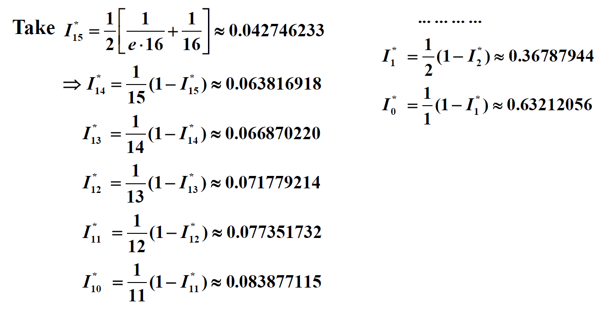

Chap 1: Mathematical Premiminaries⚓︎
约 2102 个字 预计阅读时间 11 分钟
课程概览
Q1：数值分析是什么？
Q2：这门课程介绍什么？
- 介绍经典的近似方法
- 在理想化的数学世界中，我们可以有无限位数的数字。但是在计算机的世界中，每个数字只有固定、有限的位数，这意味着只有部分有理数才能被精确表示，因此大多数数字都是近似表示的。但在多数情况下，这样的近似是可以被接受的。
- 解释这些方法如何、为何、何时能期望它们正常工作
- 为我们未来在科学计算方向的研究打下坚实基础
建议看一下 wiki 的定义，讲得更清楚！
核心知识
- 误差
- 成因：截断 / 舍入
- 测量：绝对 / 相对
- 收敛（主要是简单的稳定性分析）
Roundoff Errors and Computer Arithmetic⚓︎
讨论 1：近似表示 \(\int_0^1 e^{-x^2} dx\)
使用泰勒展开式表示 \(e^{-x^2}\)，因此：
令 \(\int_0^1 e^{-x^2} dx = S_4 = 1 - \dfrac{1}{3} + \dfrac{1}{10} - \dfrac{1}{42} \approx 1 - 0.333 + 0.1 - 0.024 = 0.743\)
因为余项 \(|R_4| = |\dfrac{1}{4!} \times \dfrac{1}{9} - \dfrac{1}{5!} \times \dfrac{1}{11} + \dots| < \dfrac{1}{4!} \times \dfrac{1}{9} < 0.005\)，所以上述结果保留到千分位。
综上：
- 舍入误差 < 0.0005 * 2 = 0.001
- 截断误差 < 0.005
- | 总误差 | < 0.006
接下来马上介绍误差的概念 ~
从成因角度来看，误差(error) 可以分为：
- 截断误差(truncation error)：从用于近似表示无限级数的，截断或有限的求和中得到的误差
- 舍入误差(roundoff error)：执行实数计算时得到的误差。由于机器只能表示有限位的数字，因此进行算术运算时会产生这种误差
用规范化(normalized) 的十进制浮点数形式表示实数（\(k\) 位十进制机器数
具体来说，假如给定一个实数 \(y = \textcolor{cornflowerblue}{0.d_1 d_2 \dots d_k} d_{k+1} d_{k+2} \dots \times \textcolor{cornflowerblue}{10^n}\)，那么它对应的浮点数形式为：
此外，误差又可按测量方式的不同分为（假设 \(p^*\) 是 \(p\) 的近似形式
- 绝对误差(absolute error)：\(|p - p^*|\)
- 相对误差(relative error)：\(\dfrac{|p - p^*|}{|p|}, p \ne 0\)
如果 \(t\) 是满足下面关系的最大非负整数，那么称 \(p^*\) 是 \(p\) 保留至 \(t\) 位有效数字(significant digits) 的近似形式。
所以有效数字的定义是从相对误差出发的。
回到前面对截断和舍入的讨论，比较一下它们的相对误差：
-
截断(chopping)
\[ \begin{align} \Big|\dfrac{p - p^*}{p}\Big| & = \Big| \dfrac{0.d_1 d_2 \dots d_k d_{k+1} \dots \times 10^n - 0.d_1 d_2 \dots d_k \times 10^n}{0.d_1 d_2 \dots d_k d_{k+1} \dots \times 10^n} \Big| \notag \\ & = \Big|\dfrac{0.d_{k+1} d_{k+2} \dots}{0.d_1 d_2 \dots}\Big| \times 10^{-k} \le \dfrac{1}{0.1} \times 10^{-k} = 10^{-k+1} \notag \end{align} \] -
舍入(rounding)
\[ \Big|\dfrac{p - p^*}{p}\Big| \le \dfrac{0.5}{0.1} \times 10^{-k} = 0.5 \times 10^{-k+1} \]
舍入误差对计算结果的影响：
-
两个近乎相等的数字相减，会导致有效位数的抵消
例子
\(a_1 = 0.1234\textcolor{red}{5}, a_2 = 0.1234\textcolor{red}{6}\) 都有 5 位有效数字，但是 \(a_2 - a_1 = 0.0000\textcolor{red}{1}\) 只有 1 位有效数字。
-
用一个很小的数去除（或用很大的数去乘）另一个数，会导致误差的扩大
例子
假如有一个值 \(a = \dfrac{p}{q}\)，它的近似结果为 \(a^* = \dfrac{p + \varepsilon_p}{q + \varepsilon_q}\)。那么：
- 绝对误差 \(e_{\text{abs}} = |a^* - a|\)
- 相对误差 \(e_{\text{rel}} = \dfrac{e_{\text{abs}}}{a}\)
我们可以把绝对误差看作是 \(q\) 关于 \(\dfrac{p}{q}\) 的函数，对它求导，我们就能观察绝对误差的变化率。所以：
\[ \begin{align} e_{\text{abs}}'(q) & = \dfrac{d\frac{p}{q}}{dq} \notag \\ & = -\dfrac{p}{q^2} \notag \end{align} \]因此，如果 \(q\) 是一个很小的数，那么对其稍加改动，绝对误差就会产生很大的变化。
启示：在让计算机计算数学公式前，要先对公式化简，以降低对精度的影响。
讨论 2
计算 \(f(x) = x^3 - 6.1x^2 + 3.2x + 1.5\) 在 \(x = 4.71\) 时的值，保留 3 位有效数字。
比较精确计算，以及分别使用截断和舍入两种方法近似的结果：

注意
中间结果也要记得截断 / 舍入，不是只对最终结果截断 / 舍入！
最终结果：
- Exact = -14.263899
- Chopping = -13.5
- Rounding = -13.4
相对误差：
- Chopping = 5%
- Rounding = 6%
因此两种近似方法得到结果误差都偏大，而且舍入近似法效果更差。
下面介绍一种可以使近似结果更为精确的方法——秦九韶算法（又称 Horner's Method
利用这一公式，我们可以将原函数转换为：
最终结果：
- Chopping = -14.2
- Rounding = -14.3
相对误差：
- Chopping = 0.45%
- Rounding = 0.25%
Algorithms and Convergence⚓︎
定义
若算法满足：对初始数据的微小改动对最终结果的影响不大，那么称这样的算法是稳定的(stable)，否则就是不稳定的(unstable)。如果算法仅对某些特定的初始数据改动是稳定的，那么称这种算法是条件稳定的(conditionally stable)。
注：到第 5 章的时候我们还会回过头来看这个概念。
定义
令 \(E_0 > 0\) 表示初始误差，\(E_n\) 表示 \(n\) 次运算后的误差。
- 如果 \(E_n \approx C n E_0\)，其中 \(C\) 是与 \(n\) 独立的常量，那么称误差是线性(linear) 增长的
- 如果 \(E_n \approx C^n E_0\)，其中 \(C > 1\)，那么称误差是指数(exponential) 增长的
注
- 误差的线性增长通常是不可避免的，且当 \(C\) 和 \(E_0\) 都很小的时候，一般而言结果是可被接受的
- 误差的指数增长应当避免，因为即使对于很小的 \(n\)，\(C^n\) 的值也可能变得很大。无论 \(E_0\) 的大小如何，这样的误差都会导致不可接受的不精确结果。
例子
计算 \(I_n = \dfrac{1}{e} \int_0^1 x^n e^x dx, n = 0, 1, 2, \dots\)
- 通过分部积分法，可以得到：\(I_n = 1 - nI_{n-1}\)
- \(I_0 = \dfrac{1}{e} \int_0^1 e^x dx = 1 - \dfrac{1}{e} \approx 0.63212056 = I_0^*\)，对应的绝对误差 \(|E_0| = |I_0 - I_0^*| < 0.5 \times 10^{-8}\)
- 此外，可以得到不等式：\(\dfrac{1}{e} \int_0^1 x^n e^0 dx < I_n < \dfrac{1}{e} \int_0^1 x^n e^1 dx\)，因此 \(I_n \in \Big(\dfrac{1}{e(n+1)}, \dfrac{1}{n+1}\Big)\)
-
然而，借助第 1 步的等式和第 2 步的近似结果，我们继续计算后面的结果，发现：

误差越来越大，才算了十几项计算的结果就变得很离谱，明显超出第 3 步得到的不等式范围
讨论 3：出现上述情况的原因？
绝对误差 \(|E_n| = |I_n - I_n^*| = |(1 - nI_{n-1}) - (1 - nI_{n-1}^*)| = n|E_{n-1}| = \dots = n!|E_0|\)，所以误差是以阶乘速度增长的，比指数级别的增长还要快得多！
- 在法 1 基础上，将等式 \(I_n = 1 - nI_{n-1}\) 转换为等价形式 \(I_{n-1} = \dfrac{1}{n} (1 - I_n)\)
- 同样根据法 1 得到的不等式，我们取中间值作为 \(I_n\) 的近似值，即令 \(I_n^* = \dfrac{1}{2} \Big[\dfrac{1}{e(N+1)} + \dfrac{1}{N+1}\Big] \approx I_n\)
- 此时的绝对误差为：\(|E_n| = |I_n - I_n^*| \rightarrow 0, n \rightarrow +\infty\)
-
现在得到的计算结果如下所示：
可以看到，计算结果的误差变得很小了，到达可以被接受的程度
-
这种转换之所以可行，是因为 \(|E_{n-1}| = \Big| \dfrac{1}{n} (1 - I_n) - \dfrac{1}{n} (1 - I_n^*) \Big| = \dfrac{1}{n}|E_n|\)，从而 \(|E_n| = \dfrac{1}{N(N-1)\dots(n+1)} |E_N|\)，也就是说即使当 \(n\) 变得很大，误差还是很小，是稳定的误差
注
在之后的学习中，我们需时刻关注误差对近似求解的影响；并要记住：输出值的误差来自输入值的误差（误差的传播性(propagation)
补充：收敛速度
若 \(\lim\limits_{h \rightarrow 0} f(h) = L\)，那么 \(f(h)\) 的收敛速度 \(p\) 满足：\(f(h) - L = O(h^p)\)。
对应的作业练习📝
对应小测 1💯
评论区